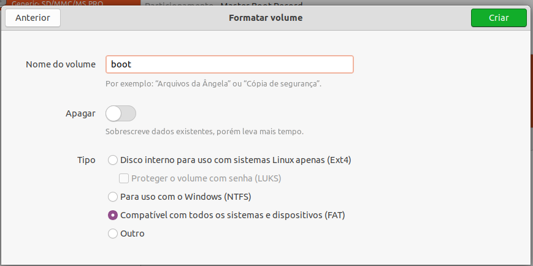
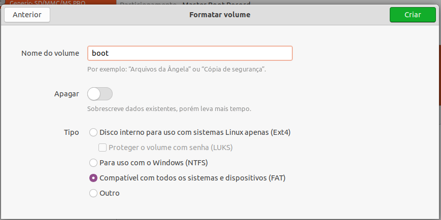
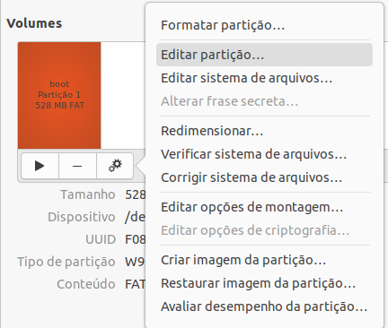
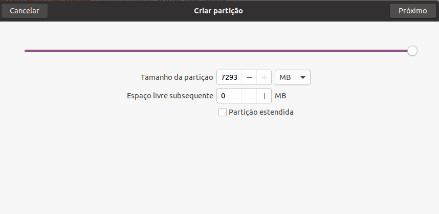

Particionando o Cartão SD¶
Este guia descreve o processo de particionamento, utilizando um sistema Linux, de um cartão microSD em duas partes, denominadas de boot e rootfs com o objetivo de gerar um cartão SD bootável. O procedimento descrito abaixo é realizado utilizando o gerenciador de discos do próprio Ubuntu, não sendo necessário instalar novos softwares.
Usualmente, o cartão microSD é configurado em uma única partição formatada no padrão Windows FAT, configuração típica encontrada em cartões adquiridos em varejo. Porém, aqui particionaremos o cartão microSD em duas partes, que serão denominadas boot e rootfs, sendo o sistema de gestão de arquivos da partição boot "VFAT" e da partição rootfs "ext4".
A figura abaixo apresenta um exemplo de cartão de memória com as partições já definidas, montadas e contendo o sistema operacional do computador embarcado. No exemplo o cartão SD possui um total de 4 GB, porém, para o projeto Yocto, um cartão de memória de 2 GB deve ser suficiente.

Procedimentos¶
Warning
A versão do sistema operacional utilizada nas atividades foi o Ubuntu 20.04 (LTS), porém os comandos são os mesmos para versões mais antigas do Ubuntu, a partir do Ubuntu 14.04 (LTS). Os procedimentos podem ter algumas diferenças a depender da versão e distribuição do Linux a ser utilizada.
Insira o cartão microSD ou um adaptador com ele em uma porta disponível no seu computador Linux.
Pesquise em seu computador um aplicativo chamado Discos (Disks) e o inicie. Logo ao abrir, o aplicativo exibira os dispositivos de memória conectados ao computador.
Na aba de Discos, selecione o cartão microSD que deseja particionar.

Clique em "Desmontar o sistema de arquivos" abaixo de Volumes para habilitar modificações no cartão microSD.

Para criar novas partições em diferentes formatos é recomendado excluir a partição do seu cartão microSD, para isso, clique em "Excluir partição".

Warning
Está etapa irá formatar o seu cartão microSD, portanto, todos os dados ali presentes serão excluídos permanentemente.
Clique em "Criar uma nova partição para criar a primeira partição.

Está partição será nomeada como "boot", terá um tamanho de 528MB e será configurado com o tipo de gestão de arquivos "FAT", como exemplificado abaixo. Após configurar, clique em "Criar" para gerar está nova partição.
 
Em seguida, vá em Mais Ações > Editar partição, configure o Tipo de partição como "W95 FAT32 (LBA)" e ative a opção "Iniciável para determinar que é nesta partição que o sistema operacional deve ser carregado.
Tip
Neste exemplo, foram reservados 528 MB para a partição de boot, entretanto, utilizam-se para inicialização menos de 100 MB. Sendo assim, caso futuramente venha a faltar espaço para armazenamento de dados será possível ampliar a partição roots refazendo esta divisão.
Agora iremos criar a segunda partição, chamada de rootfs. Portanto, selecione o espaço livre do cartão SD e clique em Criar partição em espaço vazio.

Está partição será nomeada como "rootfs" e para ela destinaremos toda a memória remanescente no cartão SD. Esta partição será configurada com o tipo de gestão de arquivos "Ext4", sistema de arquivos padrão dos atuais sistemas GNU/Linux. Após configurar, clique em "Criar" para gerar está nova partição.

Em uma execução bem-sucedida, o resultado será similar a figura abaixo, onde os procedimentos foram aplicados em um cartão de 8GB.

(Opcional) Para remontar as partições, basta apenas selecionar a partição e clicar em Montar a partição selecionada. Está ferramenta irá montar, automaticamente, a partição selecionada ao sistema de arquivos /media/<User_Name>
Referências¶
Create Bootable MicroSD Card - gumstix.com
Script - Make 2 Partition SD Card - github.com
How to Make 2 Partition SD Card - Texas Instruments Processors Wiki
PITA, H. C. Desenvolvimento de sistema de comunicação multiplataforma para veículos aéreos de asa fixa. Faculdade de Tecnologia, Universidade de Brasília, 2018.